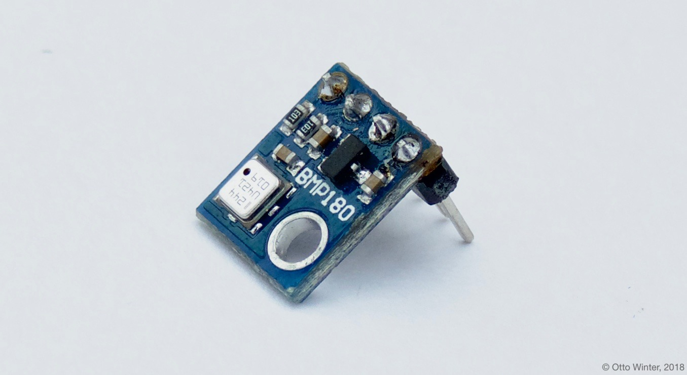

BMP085 Temperature+Pressure Sensor¶
The BMP085 sensor platform allows you to use your BMP085 (datasheet, adafruit), BMP180 (datasheet, adafruit) and BMP280 (datasheet, adafruit) temperature and pressure sensors with esphomelib. The I²C is required to be set up in your configuration for this sensor to work.

{kind=link}
BMP180 Temperature & Pressure Sensor..
{kind=link}
# Example configuration entry
sensor:
- platform: bmp085
temperature:
name: "Outside Temperature"
pressure:
name: "Outside Pressure"
update_interval: 15s
Configuration variables:¶
- temperature (Required): The information for the temperature sensor.
- name (Required, string): The name for the temperature sensor.
- id (Optional, ID): Set the ID of this sensor for use in lambdas.
- All other options from Sensor and MQTT Component.
- pressure (Required): The information for the pressure sensor.
- name (Required, string): The name for the pressure sensor.
- id (Optional, ID): Set the ID of this sensor for use in lambdas.
- All other options from Sensor and MQTT Component.
- address (Optional, int): Manually specify the i^2c address of the sensor. Defaults to
0x77. - update_interval (Optional, Time): The interval to check the sensor. Defaults to
15s. See Default Filter.